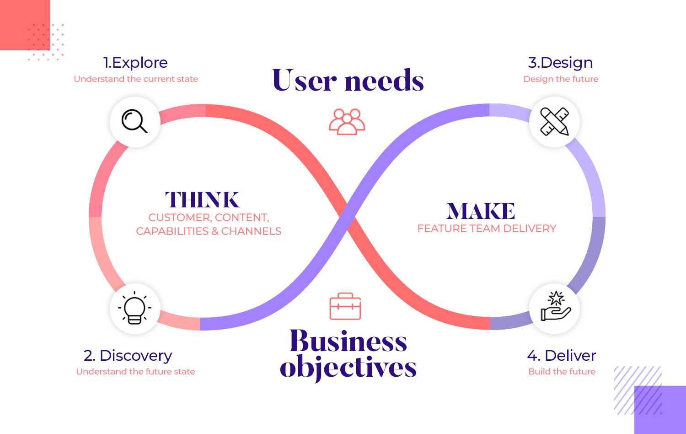
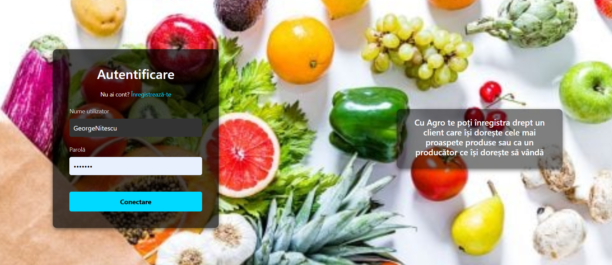
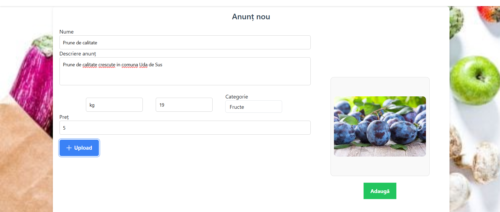
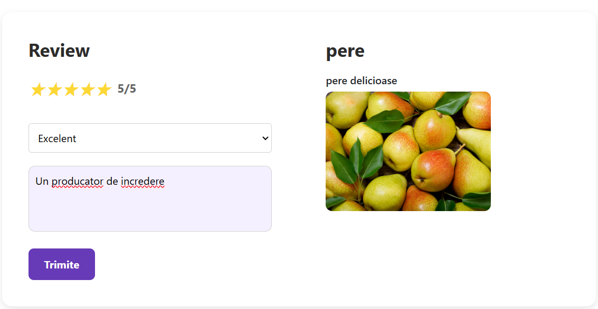

MVP Creation
In order to build an MVP, only the key functionalities of the application need to be implemented to test its capabilities.
In order to achieve this, we needed a thorough investigation and validation to calibrate interest in our application.
In milestone 1 and milestone 2, we defined our idea, identified the main customer segments, and validated those customer
segments in order to assess their needs, as those will influence the development of the application.

The main general customer segments are:
- Farmers who wish to sell their produce at a larger scale.
- Consumers from urban areas who wish to buy bio goods easily.
In milestone 6, we estimated our future revenue, were we assessed the fact that we might not be able to compete with the
giants in the industry right away, but we can develop a decent market cap, generating a big revenue.

The needs of the main users of the application need to take main stage when developing the MVP. These will be listed down below.
Key assumptions when building Agro MVP that were taken into consideration:
- Users need to be attracted to the page through an immersive home page.
- Users need to be able to create an account and login into it.
- Buyers need to be able to buy a product and collect desired products into a cart.
- Sellers should be able to post an announcement.
- Sellers should be able to see incoming orders.
- Users should be able to see a list of the available for sale products.

Features that were created for this MVP images associated with each feature:
- Homepage
- User Registration

- User Login

- Product Listing
- Product Acquisition
- Announcement Creation

- Incoming acquisition requests from consumers
- Product Cart Functionality
- Profile edit

- Review

An important fact that also needs to be checked is the feedback loop in order to fix possible problems that we might have
omitted. That's why we asked people for feedback during the development of the MVP, keeping them involved in the project.